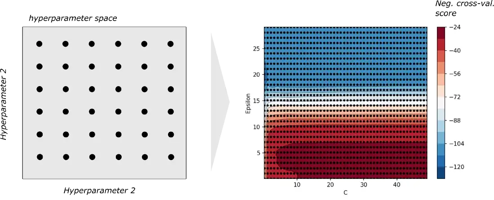
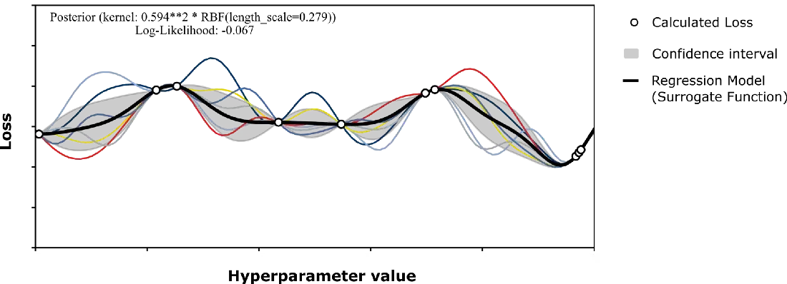

2.3 Hyperparameter Optimisation
Contents
2.3 Hyperparameter Optimisation#
The search for optimal hyperparameters is called hyperparameter optimisation, i.e. the search for the hyperparameter combination for which the trained model shows the best performance for the given data set. Popular methods for doing this are Grid Search, Random Search and Bayesian Optimisation.
A conventional machine-learning model has hyperparameters and parameters. Parameters of a model are learned during the training process (E.g. the weights \(\theta\) in linear regression). Hyperparameters on the other hand, are values that are set before the actual training to control the learning process. The hyperparameters influence the training process as much as the parameters of the model and thus the performance of the resulting model.
Validation of the Model#
In order to determine what hyperparameters lead to the best performing model, we need to establish the notion of success (i.e. what outcome is considered as a favourable one in comparison to another). As we build models to do predictions, evaluation metrics that align with prediction performance (such as MSE for regression and Accuracy for classificaiton) can be used to determine the best hyperparameter set.
When evaluating the predictive performance using a suitable evaluation metric, it is important to use a validation set. The idea behind a validation set is to allocate a fraction of the data for evaluation and not using this data during the training of the model. There are several methods one can use to do validation such as k-fold cross validation and hold out validation. These methods are pre-packaged in libraries such as Scikit-learn. More details are found here.
As per the figure above, we select a model family and seek to identify the best set of parameters and hyperparameters fitting the model to the data we have. While we learn the parameters through training, hyperparameters, that govern the learning process should be learned before training starts (e.g. the polynomial regression has the the polynomial degree that needs to be decided before training starts).
The search for optimal hyperparameters is called hyperparameter optimisation, i.e. the search for the hyperparameter combination for which the trained model shows the best performance for the given data set. Popular methods for doing this are Grid Search, Random Search and Bayesian Optimisation.
Finding the Optimal Hyperparameter Setting#
In order to find the optimal hyperparameter settings, we could theoretically calculate the validation score for different possible hyperparameter combinations, and finally choose the hyperparameters that show the best performance in the evaluation. In this context, we will discuss three popular hyperparameter tuning techniques.
Grid Search
Random Search
Bayesian Optimisation
1. Grid Search#
The hyperparameter optimisation process “Grid Search” works by evaluating the validation performance of a model with respect to ALL posible hyperparameter combinations.
If we consider a model that has two hyperparameters, where both hyperparameters have 6 possible values, grid search creates a grid of hyperparameter combinations (36 combinations on left side figure) where all of them are evaluated (right side figure). Based on the results, the best performing combination is chosen as the final hyperparameter set.
2. Random Search#
If the available computing power is limited and a hyperparameter combination already takes several seconds or minutes, it may make sense to look for solutions that reduce the number of required data points.
Random search takes a relatively lazy approach in comparison to the grid search approach by only evaluating a subset of all possible hyperparameter combinations. The subset is chosen through random sampling. In cases where the hyperparameter combination is massive (due to large number of hyperparameters and/or many possible values per each hyperparameter), grid search, while holistic, may deem computationally infeasible. In such scenarios, random search (with a good enough random sample) may be a more efficient way to find a satisfactory solution.
3. Bayesian Optimisation#
Bayesian Optimisation introduces the Surrogate Function to repsent how the hyperparameters affect performance. In this case, the Surrogate Function is a calculated regression model that is supposed to approximate the real relationship between hypeparameter values and the loss.
Basically, in Bayesian Optimisation we try to reduce the uncertainty of the model step by step, with each additional sampling point calculated — usually focusing on areas where the global maximum of the (performance) function is likely to lie.
Caution#
Sounds like an extremely effective approach in itself, although one must take into account that this procedure also results in additional computational effort and that a sufficient replication of the perfomance function cannot always be achieved. As with any other regression problem, the formation of a sufficiently good model cannot be taken for granted. While Grid Search ends with the evaluation of the model performance, Bayesian hyperparameter optimisation additionally calculates the Surrogate and Acquisition Function.
Another point to consider is that Bayesian optimisation aims to sample hyperparameter combinations in a way that the uncertainty is reduced over time. This requires systematic sampling. As combinations are no-longer randomly sampled and the sampling relies on prior information, parallelisation becomes challening in this case.
Summary#
Grid Search
Advantages
Tries all possible combinations of hyperparameters
Thorough search guarantees best results within the parameters of the search
Can be done in parallel
Disadvantages
Computationally expensive
Limit search space is compuationally feasible
Not effective if the search space is not set appropriately
Random Search
Advantages
Only uses a subset possible combinations of hyperparameters sampled randomly
Can do a statistically robust search in a wide space of hyperparameters
Computationally efficient
Can be done in parallel
Disadvantages
Not effective if the search space is not set appropriately
Not effective if a good size of samples are not obtained
Can miss a promising hyperparamter region by chance
Bayesian Optimisation
Advantages
Uses a subset possible combinations of hyperparameters sampled systematically
Each trial gives a lot of information about the search space
Computes a surrogate fuinction that proxy the relationship between the values and the performance
Disadvantages
Each sample step is computationally expensive
The surrogate function can underfit leading to sub optimal results
Cannot be done in parallel